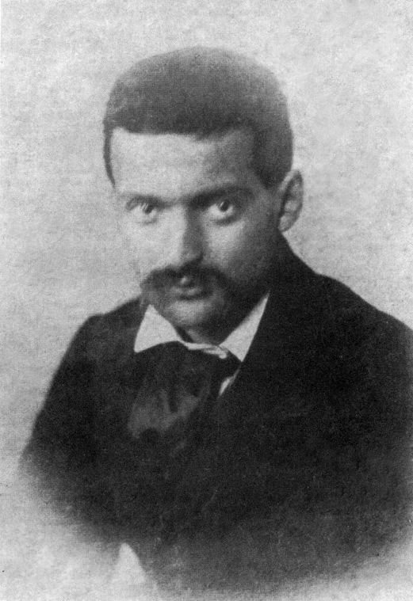

Semir Zeki
Visión interior
Diapositivas de Cristian G Guerrero
Una función
del cerebro y del arte
Para representar el mundo real, el cerebro (o el artista)
debe sacrificar la información que no es esencial.
- Semir Zeki
Una función del cerebro
¿Por qué existe la parte visual del cerebro?
Para poder ver... ¿para qué necesitamos ver?
- encontrar una dirección
- reconocer a la gente
- comprar comida
- elegir pareja
Una función del cerebro
Vemos para relacionarnos, pero... muchos animales se relacionan de forma eficiente con un sistema visual mucho más simple.
Una función del cerebro
Vemos para poder adquirir conocimiento del mundo que nos rodea.
- Semir Zeki
La escuela de Atenas - Rafael (1511)
La escuela de Atenas - Rafael (1511)
La escuela de Atenas - Rafael (1511)
La escuela de Atenas - Rafael (1511)
La escuela de Atenas - Rafael (1511)

La escuela de Atenas - Rafael (1511)
Una función del cerebro
El cerebro solo se interesa por las propiedades constantes,
permanentes y características del mundo externo, rasgos que le permitan categorizar los objetos.
- Semir Zeki
Una función del arte
¿Qué función tiene el arte?
El arte...
- nos permite preservar una escena
- conmueve, perturba o excita
- tiene una función social
Una función del arte
¿Vemos para poder contemplar el arte?
La estética es un atributo único y singular
Parece pretencioso, sin embargo... el único material que el artista tiene a su disposición es aquel del que su cerebro tenga conocimiento visual
Una función del arte
Representar los elementos constantes, eternos y duraderos de objetos,
superficies, rostros, situaciones, etc. y, por tanto, permitir que adquiramos conocimiento.
- Semir Zeki
El arte
del campo receptivo
El arte nos muestra que también existen verdades constantes referentes a formas.
- Piet Mondrian
El campo receptivo
Las neuronas responden a estímulos concretos presentados en una zona determinada.
Tres elementos críticos:
- posición
- forma
- especifidad
La neurofisiología
de líneas orientadas
Paul Cézanne (1839 - 1906)
Paul Cézanne (1839 - 1906)
Intentó reducir la enorme variedad de formas de la naturaleza a unos cuantos elementos
Lo característico del método Cézanne para interpretar la forma es que primero se basa en unos pocos elementos casi
geométricos, claramente relacionados, y después ... concede a la parte del contorno toda la infinita sutileza de variaciones
que su sensibilidad pueda descubrir.
- Michel Hoogs
Baigneurs - Paul Cézanne (1890)
Montagne Saint-Victoire - Paul Cézanne (1902)
Montagne Saint-Victoire - Paul Cézanne (1902)
Montagne Saint-Victoire - Paul Cézanne (1902) - detail
Paolo Uccello (1397 - 1475)

La batalla de San Romano - Paolo Uccello (1440)
La batalla de San Romano - Paolo Uccello (1440)
La batalla de San Romano - Paolo Uccello (1440) - detail
Kazimir Malevich (1879 - 1935)
Composición Suprematista - Kazimir Malevich (1916)
Supremus No. 55 - Kazimir Malevich (1916)
Piet Mondrian (1872 - 1944)

Composition No.IV - Piet Mondrian (1914)
Composition in red, yellow, blue and black - Piet Mondrian (1921)
Neurofisiología de líneas orientadas
- Al contemplar este tipo de arte, se activan muchas neuronas de V1.
- Estas responden ante líneas orientadas.
- Algunas tienen preferencia de longitud: percepción de líneas paralelas.
La neurofisiología
de cuadrados y rectángulos
Composition with Color Fields - Piet Mondrian (1917)
Cuadrado rojo - Kazimir Malevich (1915)
Neurofisiología de cuadrados y rectángulos
- Los campos receptivos suelen tener forma cuadrada o rectangular.
- En V4, muchas células responden ante cuadrados cuyo color es distinto al del fondo.
Problemas perceptuales de los campos receptivos
- ¿Cómo sabemos que una línea es la misma si se percibe por distintas células, que pueden estar incluso en hemisferios distintos?
- ¿Cómo sabemos que una línea sigue siendo la misma a pesar de su movimiento?
- ¿Cómo identificamos un objeto compuesto por puntos? ¿Cómo lo separamos de su entorno?

Pintura suprematista - Kazimir Malevich (1915)
Pintura suprematista - Kazimir Malevich (1928)
Luxe, Calme et Volupté - Henri Matisse (1904)
La neurofisiología
del movimiento
Marcel Duchamp (1887 - 1968)

Desnudo bajando una escalera - Marcel Duchamp (1912)
Mujer bajando una escalera - Eadweard Muybridge (1887)
Bird Flight - Étienne-Jules Marey (1882)
Jean Tinguely
Metamalevich
Alexander Calder